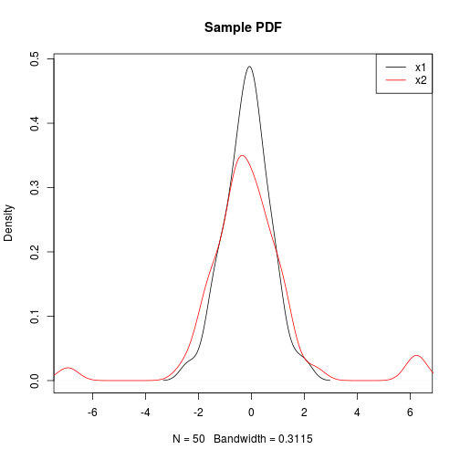
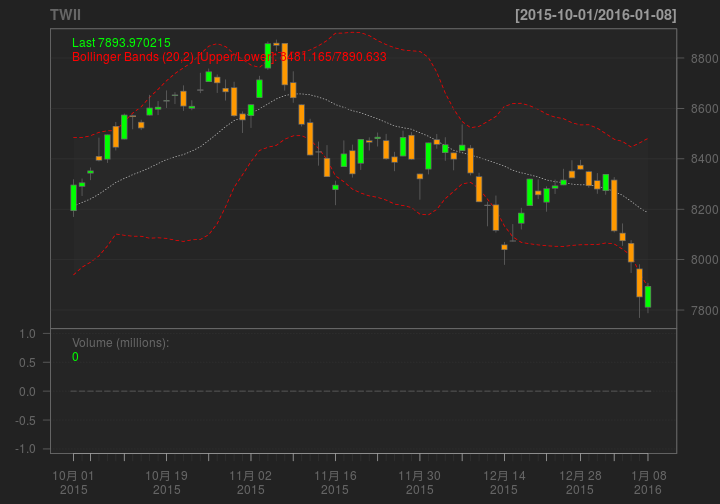

R 語言概論
Wush Wu
國立台灣大學
Wush Wu
學經歷
- 國立台灣大學電機工程學研究所博士生
- 宇匯知識科技資料科學家
- Taiwan R User Group 共同創辦人
著作：
- Wush Chi Hsuan Wu, Mi-Yen Yeh and Ming-Syan Chen: Predicting Winning Price in Real Time Bidding with Censored Data. KDD 2015.
- 以下R 套件的共同作者、貢獻者：digest, knitr, FeatureHashing...
R Basic 系列課程目標
- 了解R 語言的基礎
- 能利用R 語言進行資料的ETL
- 善用R 強大的資料視覺化功能
課程進行方式
- 利用投影片講解R 的各種工具的設計理念與範例
- 直接利用R 學R 語法，完成指定作業
- 歡迎各種Feedback: https://github.com/wush978/DataScienceAndR/issues
本次課程目錄
- R 簡介
- R 的傳統用途
- 來自R 社群的貢獻
- 近代R 的演變
- 安裝R 與Rstudio
- R 的開發環境簡介
- R 的套件系統
- 利用swirl 快速學習R 語言
R 簡介
R 來自世界上最專業的統計學家

取自 http://myfootpath.com/careers/engineering-careers/statistician-careers/
R 可以輸出高品質的視覺化

取自 http://www.r-bloggers.com/mapping-the-worlds-biggest-airlines/
R 有驚人彈性和潛力

取自 http://r4stats.com/2013/03/19/r-2012-growth-exceeds-sas-all-time-total/
R 很容易和其他工具整合
R 很容易擴充和客製化

和其他工具相比，R 的特色
- R 有非常先進的數據視覺化系統
- R 有很多的進階數據分析工具
R 的傳統用途
範例 - 探索數據的分佈
- 統計很多理論都需要常態分佈
- 但是一組數據真的是常態分佈嗎？
範例 - 探索數據的分佈
- 一行指令就可以畫圖：
plot(density(x))

範例 - 探索數據的分佈
- 做「是否為常態分佈」的統計檢定？再一行：
shaprio.test(x)
Shapiro-Wilk normality test
data: x
W = 0.936, p-value = 0.0001108
範例 - 探索數據的分佈
- 比較兩個數據是不是來自相同的分佈？沒問題
plot(density(x1), xlim = range(c(x1, x2)), main = "Sample PDF")
lines(density(x2), col = 2)
legend("topright", c("x1", "x2"), lty = 1, col = 1:2)
範例 - 探索數據的分佈

範例 - 探索數據的分佈
- 檢定？
ks.test(x1, x2)
Two-sample Kolmogorov-Smirnov test
data: x1 and x2
D = 0.24, p-value = 0.1124
alternative hypothesis: two-sided
範例 - A/B 方法比較（常見於電子商務）
- 我們使用有兩套方法做推薦，要比較推薦的成果
- 方法A：在10000點擊有10個購買
- 方法B：在5000 點擊有3 個購買
- 我怎麼知道這兩種方法的轉換率（購買/點擊）是不是明顯不同？
範例 - A/B 方法比較（常見於電子商務）
- 統計檢定的概念：
- 如果方法A 的轉換率和方法B 相同，都是\(3/5000\)
- 那在10000個點擊裡面，發生10個購買或以上的機率是多少？
- R 非常適合撰寫這類機率性質的模擬：
# 假設方法A 真正的轉換率和就是 3 / 5000
p <- 3/5000
# 我們可以模擬1000次在10000個點擊下，方法A 的轉換數
plot(density(x <- rbinom(1000, 10000, p)))
範例 - A/B 方法比較（常見於電子商務）
- 結果示意圖
範例 - A/B 方法比較（常見於電子商務）
- 精確的模擬結果：
mean(x > 10)
[1] 0.05
範例 - A/B 方法比較（常見於電子商務）
- 想看信賴區間？透過套件，立馬取得結果：
library(binom)
binom.confint(c(10, 3), c(10000, 5000), methods = "exact")
method x n mean lower upper
1 exact 10 10000 1e-03 0.0004796397 0.001838264
2 exact 3 5000 6e-04 0.0001237515 0.001752444
範例 - A/B 方法比較（常見於電子商務）
- 太棒了，但是我想用某篇paper的方法。
- 你可以找找看有沒有你要的方法：
來自R 社群的貢獻
範例 - 相關性
- R 擁有許多你想像不到的方式來探索數據
- 他們都來自於世界各地的貢獻者
範例 - 相關性
suppressPackageStartupMessages(library(PerformanceAnalytics))
chart.Correlation(iris[-5], bg=iris$Species, pch=21)
範例 - 相關性
round(Ca <- cor(attitude), 2)
symnum(Ca) # simple graphic
heatmap(Ca, symm = TRUE, margins = c(6,6))
範例 - 相關性
- 許多機器學習的方法，會假設數據彼此之間是獨立的
- R 可以迅速幫你檢驗數據是否是獨立的
範例 - 相關性
data(edhec)
chart.ACFplus(edhec[,1,drop=FALSE])
範例 - 經濟學人風格的視覺化
近代R 的演變
R 近年的進展
- 收集數據
- 特定領域的資料分析
- 股票分析
- 棒球分析
- 文字探勘
- 收集數據、建造模型之餘，還要展現結果
- 互動式網頁服務
- API 伺服器
- 大規模數據分析
收集數據
和各種資料相關服務的串接
- 任何和資料相關的服務，有很大的機會可以和R 串接
特定領域 -- 股票分析
library(quantmod)
getSymbols("^TWII")
head(TWII)
[1] "TWII"
| TWII.Open | TWII.High | TWII.Low | TWII.Close | TWII.Volume | TWII.Adjusted |
|---|---|---|---|---|---|
| 7871.41 | 7937.26 | 7843.60 | 7920.80 | 5710600 | 7920.788 |
| 7954.96 | 7999.42 | 7917.30 | 7917.30 | 5951400 | 7917.288 |
| 7929.89 | 7955.90 | 7901.24 | 7934.51 | 5717400 | 7934.498 |
| 7940.20 | 7942.23 | 7821.71 | 7835.57 | 5181400 | 7835.558 |
| 7778.57 | 7797.57 | 7736.11 | 7736.71 | 4292400 | 7736.698 |
| 7778.38 | 7827.93 | 7778.38 | 7790.01 | 4516000 | 7789.998 |
特定領域 - 股票分析
chartSeries(TWII, subset = "last 4 months", TA = c(addVo(), addBBands()))

特定領域 - 棒球分析
library(Lahman)
head(Teams[,c("yearID", "name", "Rank", "W", "L", "R", "RA")])
| yearID | name | Rank | W | L | R | RA |
|---|---|---|---|---|---|---|
| 1871 | Boston Red Stockings | 3 | 20 | 10 | 401 | 303 |
| 1871 | Chicago White Stockings | 2 | 19 | 9 | 302 | 241 |
| 1871 | Cleveland Forest Citys | 8 | 10 | 19 | 249 | 341 |
| 1871 | Fort Wayne Kekiongas | 7 | 7 | 12 | 137 | 243 |
| 1871 | New York Mutuals | 5 | 16 | 17 | 302 | 313 |
| 1871 | Philadelphia Athletics | 1 | 21 | 7 | 376 | 266 |
特定領域 - 大聯盟歷年得分
特定領域 - 王建民歷年成績
| playerID | yearID | W | L | ERA |
|---|---|---|---|---|
| wangch01 | 2005 | 8 | 5 | 4.02 |
| wangch01 | 2006 | 19 | 6 | 3.63 |
| wangch01 | 2007 | 19 | 7 | 3.70 |
| wangch01 | 2008 | 8 | 2 | 4.07 |
| wangch01 | 2009 | 1 | 6 | 9.64 |
| wangch01 | 2011 | 4 | 3 | 4.04 |
特定領域 - 文字探勘
suppressPackageStartupMessages({
library(jiebaR) # 斷詞利器
library(tm) # 文字詞彙矩陣運算
library(slam) # 稀疏矩陣運算
library(wordcloud) # 文字雲
library(topicmodels) # 主題模型
library(igraph) # 主題模型關聯
})
特定領域 - 資料收集
陳昇瑋 Sheng-Wei Chen 年會總召, 中央研究院
資訊科學研究所/ 研究員 陳昇瑋博士目前為中央研究院資訊科學
研究所研究員，同時是多媒體網路與系統實驗室主持人。他的研究焦
點著重在使用者滿意度、多媒體系統、社群計算及計算社會學等領域
，在多媒體系統及使用者經驗的量測及管理方面持續有代表性的研究
創見。 陳博士堅信資料及資料分析的價值，長期推廣資料科學及
其在各領域的應用，除本身研究皆基於資料來解決實際生活中的問題
，2014 年開始主辦「台灣資料科學愛好者年會」，期能將對於
資料科學的熱情傳達給大眾，一起來探索資料科學的潛力，將資料科
學引入每個人的專業領域之中。他十分期待能夠讓資料分析在台灣不
再是口號，而是大家手邊隨時可用來解決問題及創造價值的工具。
欲瞭解陳博士的研究及心得分享，請至他的個人網頁一探究竟。
特定領域 - 斷詞
陳 瑋 Sheng Wei Chen 年會 總召 中央研究院
資訊 科學 研究所 研究員 陳 瑋 博士 目前 為 中央研
究院 資訊 科學 研究所 研究員 同時 多媒體 網路 系統
實驗室 主持人 他 研究 焦點 著重 使用者 滿意度 多媒體
系統 社群 計算 計算 社會學 領域 多媒體系統 使用者 經
驗 量 測及 管理方面 持續 代表性 研究 創見 陳博士 堅
信 資料 資料 分析 價值 長期 推廣 資料 科學 及其 各
領域 應用 除 本身 研究 皆 基於 資料 來 解決 實際
生活 中 問題 2014 年 開始 主辦 台 灣 資料 科
學 愛好者 年會 期能將 對於 資料 科學 熱情 傳達 給大
眾 一 起來 探索 資料 科學 潛力 將 資料 科學 引入
每個 人 專業 領域 之中 他 十分 期待 能夠 讓 資料
分析 台灣 不再 口號 而是 大家 手邊 隨時 用來 解決問
題 創造 價值 工具 欲瞭解 陳博士 研究 心得 分享 請
至 他 個人 網頁 一探 究竟
特定領域 - 文字雲
特定領域：互動式網頁服務
- Shiny
- Gallery:
特定領域：API Server
大規模的數據分析
R 的Community
- R 的套件開發非常簡單。五分鐘學會「如何使用Rstudio建立R套件 」
- R 的Community 甚至創造了一個學R 的套件：swirl
Hadley近年來對R 的影響
- 前十名的R 套件有一半是Hadley寫的
| package | downloads | |
|---|---|---|
| 1 | Rcpp | 264091 |
| 2 | ggplot2 | 260823 |
| 3 | digest | 232034 |
| 4 | stringi | 207804 |
| 5 | stringr | 204669 |
| 6 | plyr | 201598 |
| 7 | scales | 200798 |
| 8 | munsell | 194471 |
| 9 | reshape2 | 179277 |
| 10 | colorspace | 169031 |
台灣的本土R 社群
安裝R 與Rstudio
R 的環境設定
- 安裝R
- 安裝Rstudio
安裝R
- Windows: 請至 CRAN 上下載 R3.2 以上的安裝程式。
- 可參考

- 影片中的範例是 3.0.2 的版本，請使用者記得安裝 3.2 以上的版本喔！
- 可參考
安裝R
- Mac: 請至 CRAN 上下載 R3.2 以上的安裝程式。
- 可參考

- 此影片由中華R 軟體學會的李明昌老師提供
- 可參考
安裝R
- Ubuntu: Ubuntu 14.04 的使用者可以參考CRAN上的安裝說明：
安裝Rstudio
- 請到Rstudio 官方網站下載社群版
- Rstudio 具備「自動完成」功能，同學不用背指令
- Windows 下具備編輯UTF-8 檔案的功能，我們作業會用到
Rstudio 環境說明
- 程式碼編輯區
- 命令列區
- 其他資訊區
- 檔案系統區
熟悉RStudio的 命令列 界面
- 注意最左下腳的符號是
> - 輸入
"hello world"後按下Enter，檢查螢幕輸出（記得加上引號） - 輸入
1 + 1後按下Enter，檢查螢幕輸出，注意有無引號 - 輸入
1 +後按下Enter，檢查螢幕輸出，注意最左下角的開頭變成+ - 按下Ctrl + C或ESC，檢查哪一個按鈕會讓左下角回復成
>開頭 - 在新的一行命令列區輸入
me之後按下Enter - 在新的一行命令列區輸入
me之後按下tab
熟悉RStudio的 程式碼編輯 界面
- 請建立在編輯界面寫程式的習慣
- 開啟新的R Script檔案
- 在第一行輸入
me隻後按下Ctrl + Enter後，觀察命令列區 - 利用滑鼠點選
me後的位置，確認游標閃爍的位置在me之後，按下tab
熟悉RStudio的其他頁面
- 請見現場示範
R 的套件系統
R 的套件系統
安裝R 的套件
- 使用Rstudio 安裝套件
- 使用命令列安裝套件
install.packages("套件名稱", repos = "套件庫網址") - 使用套件的第一步：
library(套件名稱)
利用swirl 快速學習R 語言
安裝swirl
- swirl 官方套件目前在windows上無法顯示中文
- 請安裝Taiwan R User Group上的版本
# 在命令列輸入：
install.packages(c('swirl', 'curl'), repos = 'http://taiwanrusergroup.github.io/R')
載入swirl
library(swirl)
library(curl)
進入swirl 界面
swirl() # 括號很重要
- 執行動作（呼叫函數），需要在後面加上括號
- 不加括號，R 會印出
swirl這個函數的定義
手動安裝swirl 課程
- 進入swirl 之後會跳出安裝課程的提示
- 這次的作業就是一系列swirl 的課程
- 請離開swirl 環境之後，執行：
install_course_github("wush978", "DataScienceAndR", "course")
- 細節請參考上課示範
再次進入swirl，並進入DataScienceAndR
- 請見現場示範
swirl 疑難排解
- 選錯課程
- 錯誤的接關
- Windows 下可能有編碼錯誤
作業說明
- 建立環境
- 安裝最新版本的R
- 安裝Rstudio(非必要，但是要有自行解決其他問題的能力)
- 安裝Taiwan R User Group 社群版的套件
- 安裝DataScienceAndR 系列課程
這份教材是最近寫出來的...
- 有bug 的機會很高，所以請統一回報至：https://github.com/wush978/DataScienceAndR/issues
- 看不懂的敘述、有錯字、程式卡住、讓你不爽的體驗...
- 請附上
sessionInfo()的輸出結果
- 對使用windows 的同學，我先說聲抱歉：你們的教材會比較不穩定